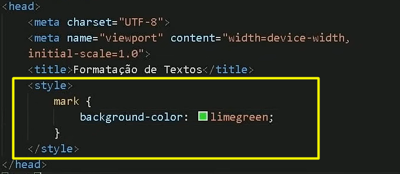

Para deixar uma palavra em negrito podemos utilizar a tag strong ou a tag B.
A tag B é uma tag de formatação não semântica, enquanto a tag strong é uma tag de formatação semântica que indica importância.
Ou seja, a tag strong é preferível quando se deseja transmitir importância semântica ao conteúdo. Pois a tag B não tem forma.
Para deixar uma palavra em itálico podemos utilizar a tag em ou a tag I.
A tag I é uma tag de formatação não semântica, enquanto a tag em é uma tag de formatação semântica que indica ênfase.
Ou seja, a tag em é preferível quando se deseja transmitir ênfase semântica ao conteúdo. Pois a tag I não tem forma.
Visualmente, as duas não têm diferença. Porém de quando trabalhamos de forma profissional ao desejar realizar um destaque uma palavra ou frase, é recomendável usar a tag strong para negrito e em para itálico.
Agora caso o texto seja inteiro em negrito ou em itálico utiliza-se a tag B ou I, respectivamente.
Para marcar um texto podemos utilizar a tag mark. Ela é utilizada para destacar partes importantes do texto, como em pesquisas ou estudos.
Caso queira mudar a cor da marcação, pode usar CSS para personalizar a aparência da tag.
Para isso basta adicionar dentro da tag mark o estilo (style) com a cor do background desejado, como no exemplo dessa frase.
É importante lembrar que a tag não herda a cor utilizada anteriormente personalizada por CSS.
Caso queira mudar a cor de todas as marcações da mesma página utilizando mark,
é preciso utilizar o style do CSS dentro da tag head (início do código HTML), como exemplo na imagem abaixo:

Caso queira deixar o texto pequeno, pode usar a tag small.
Por exemplo para colocar alguma informação importante ou um comentário.
Ja o texto maior era-se utilizado a tag big. Porém ela esta obsoleta, e pode a qualquer momento perder a função (não é recomendado a utilização de tags obsoletas).
Clicando aqui podemos ver a lista de tags obsoletas no momento presente e acompanhar atualizações futuras.
Este é o site oficial do W3C (World Wide Web Consortium), que é a principal organização responsável pela padronização da web e desenvolvimento do HTML.
Para deletar um texto, pode-se utilizar a tag del. Ela é utilizada para marcar partes do texto que foram excluídas ou removidas.
Por exemplo, se você estivesse escrevendo um documento e precisasse apagar uma parte do conteúdo, poderia usar a tag del para indicar que aquela parte foi removida.
Sendo assim a tag DEL basicamente risca o texto.
Para inserir um texto, pode-se utilizar a tag ins. Ela é utilizada para marcar partes do texto que foram adicionadas ou inseridas.
Por exemplo, se você estivesse escrevendo um documento e precisasse adicionar uma parte do conteúdo, poderia usar a tag ins para indicar que aquela parte foi adicionada.
Sendo assim a tag INS basicamente sublinha o texto.
De forma não semântica para sublinhar um texto pode-se utilizar a tag u.
Desta forma as tags strong, em, mark, del, e ins são preferíveis por serem semânticas, enquanto as tags B, I, e U são não semânticas.
Para escrever um texto sobrescrito, pode-se utilizar a tag sup. Ela é utilizada para marcar partes do texto que estão acima da linha normal, como em fórmulas matemáticas ou símbolos químicos.
Por exemplo, se você estivesse escrevendo uma fórmula química, poderia usar a tag sup para indicar que o número está elevado.
Sendo assim a tag SUP basicamente coloca o texto acima da linha normal.
Exemplo em equação matemática: x3 (x ao cubo).
Para escrever um texto subscrito, pode-se utilizar a tag sub. Ela é utilizada para marcar partes do texto que estão abaixo da linha normal, como em fórmulas matemáticas ou símbolos químicos.
Por exemplo, se você estivesse escrevendo uma fórmula química, poderia usar a tag sub para indicar que o número está em um composto químico.
Sendo assim a tag SUB basicamente coloca o texto abaixo da linha normal.
Exemplo em um símbolo químico: H2O.